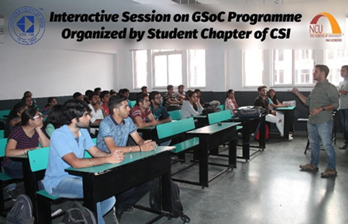
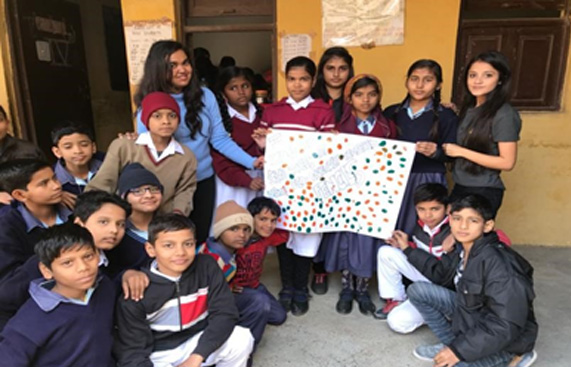

ASQ is a global community of people passionate about quality. They share the ideas and tools that make the businesses, organizations and communities work better. They offer technologies, concepts, training, solutions and an active network of quality practitioners, leaders and innovators second to none. ASQ champions the cause of quality through a variety of fields and standards. This includes the most widely known standards, such as ISO 9001. ISO 26000 and ISO 14001 as well as other standards and technical reports that apply quality management principles, tools and technology.
Founded at the dawn of the computer age, ACM’s reach extends to every part of the globe, with more than half of its 100,000 members residing outside the U.S. Its growing membership has led to Councils in Europe, India, and China, fostering networking opportunities that strengthen ties within and across countries and technical communities.

Computer Society of India (CSI) is the first and largest body of computer professionals in India. It was started on 6 March 1965 by a few computer professionals and has now grown to be the national body representing computer professionals. Today the CSI takes pride in being the largest and most professionally managed association of and for IT professionals in India. Being closely associated with Students the Society has developed a well-established net-work of “Student Branches” all across the country. CSI has 488 student branches with more than 90,000 Student Volunteers across the nation.
Enactus National Our senses towards the underprivileged are curious, our heart reaches out to those in need and we aspire to make sure that our existence becomes a reason for someone’s smile today. We got your back when your days are bad, we, are Enactus. We strive for lighting up the darkest corners of our society, because we believe that nothing is impossible.
Engineers Without Borders is an international association of national EWB/ISF groups. EWB helps the member groups develop their capacity to assist developing communities in their respective countries.